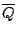
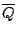
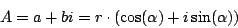
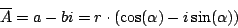
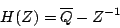
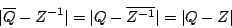
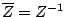
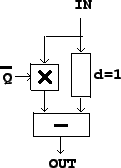

Next: Elementary recirculating filter
Up: Elementary filters
Previous: Elementary non-recirculating filter
Contents
Index
Non-recirculating filter, second form
Sometimes we will need a variant of the filter above, shown in Figure
8.10, called the
elementary non-recirculating filter, second form.
Instead of multiplying the delay output by  we multiply the direct signal
by its
complex conjugate
. If
we multiply the direct signal
by its
complex conjugate
. If

is any complex number, its complex conjugate is defined as:

Graphically this reflects points of the complex plane up and down across the
real axis. The transfer function of the new filter is

This gives rise to the same frequency response as before since

Here we use the fact that
, for any unit complex
number  , as can be verified by writing out
, as can be verified by writing out  in either
polar or rectangular form.
in either
polar or rectangular form.
Although the two forms of the elementary non-recirculating filter have the same
frequency response, their phase responses are different; this will
occasionally lead us to prefer the second form.
Figure 8.10:
The elementary non-recirculating filter, second form.
|  |
Next: Elementary recirculating filter
Up: Elementary filters
Previous: Elementary non-recirculating filter
Contents
Index
Miller Puckette
2006-12-30